Materialpaket Lesespurgeschichten Erdkunde Klasse 8 – Landschaften und Naturräume: 22 Lesespuren mit Rätselaufgaben, dreifach differenziert

Materialpaket Lesespurgeschichten Erdkunde Klasse 8 – Wetter, Klima und Naturgefahren: 5 Lesespuren mit Rätselaufgaben, dreifach differenziert
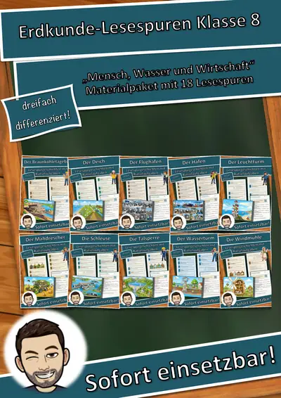
Materialpaket Lesespurgeschichten Erdkunde Klasse 8 – Mensch, Wasser und Wirtschaft: 18 Lesespuren mit Rätselaufgaben, dreifach differenziert

Materialpaket Lesespurgeschichten Chemie Klasse 8 – Stoffe, Feuer und Arbeiten im Labor: 18 Lesespuren mit Rätselaufgaben, dreifach differenziert
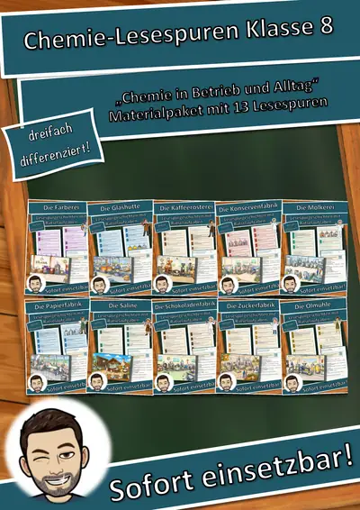
Materialpaket Lesespurgeschichten Chemie Klasse 8 – Chemie in Betrieb und Alltag: 13 Lesespuren mit Rätselaufgaben, dreifach differenziert

Materialpaket Lesespurgeschichten Biologie Klasse 8 – Pflanzen und Pilze: 12 Lesespuren mit Rätselaufgaben, dreifach differenziert

Materialpaket Lesespurgeschichten Biologie Klasse 8 – Tiere: 35 Lesespuren mit Rätselaufgaben, dreifach differenziert
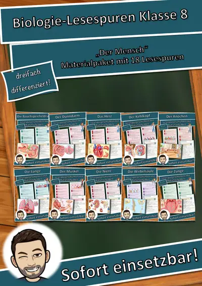
Materialpaket Lesespurgeschichten Biologie Klasse 8 – Der Mensch: 18 Lesespuren mit Rätselaufgaben, dreifach differenziert
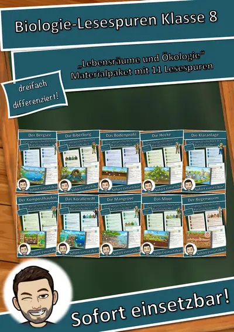
Materialpaket Lesespurgeschichten Biologie Klasse 8 – Lebensräume und Ökologie: 11 Lesespuren mit Rätselaufgaben, dreifach differenziert

Secrets of the Chestnut Tree – Lesespurgeschichte mit Rätselaufgaben auf Englisch (Klasse 8)

Baking Christmas Cookies – Lesespurgeschichte mit Rätselaufgaben auf Englisch (Klasse 8)
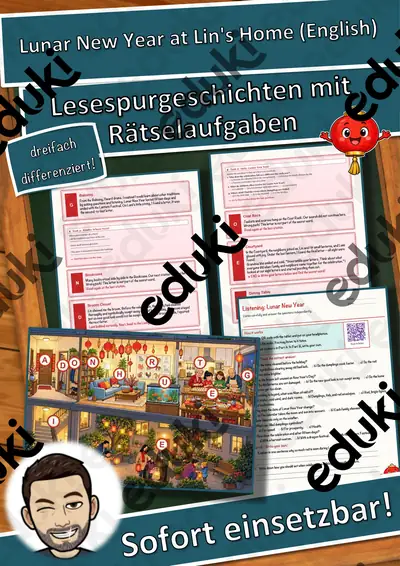
Lunar New Year at Lin's Home – Lesespurgeschichte mit Rätselaufgaben auf Englisch (Klasse 8)

Materialpaket Winter und Advent für die 8. Klasse: 10 Lesespurgeschichten mit Rätselaufgaben fächerübergreifend (Polarlichter, Streusalz, Krippenbau & mehr)

Umtausch nach Weihnachten – Gewährleistung, Garantie und Kulanz – Lesespurgeschichte mit Rätselaufgaben (Klasse 8)

Die Märzrevolution 1848 – Freiheit, Einheit und die Paulskirche – Lesespurgeschichte mit Rätselaufgaben (Klasse 8)

Gute Vorsätze – was ich ändern will – Lesespurgeschichte mit Rätselaufgaben (Klasse 8)
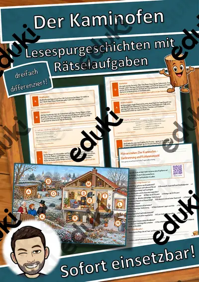
Der Kaminofen – Verbrennung und Kohlenmonoxid – Lesespurgeschichte mit Rätselaufgaben (Klasse 8)

Die Lichterkette – Reihenschaltung und Parallelschaltung – Lesespurgeschichte mit Rätselaufgaben (Klasse 8)

Ostereier natürlich färben – Farbstoffe und Indikatoren – Lesespurgeschichte mit Rätselaufgaben (Klasse 8)

Die Inventur – zählen, wiegen, vergleichen – Lesespurgeschichte mit Rätselaufgaben (Klasse 8)
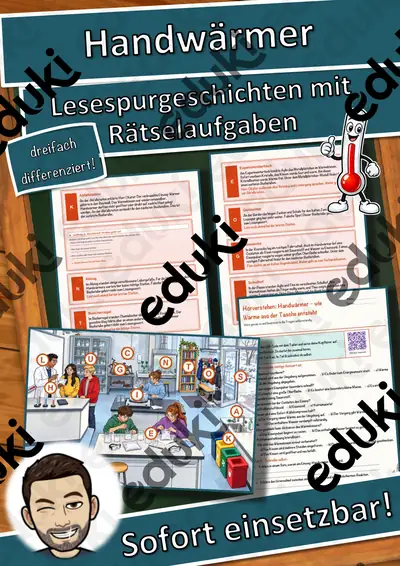
Handwärmer – wie Wärme aus der Tasche entsteht – Lesespurgeschichte mit Rätselaufgaben (Klasse 8)

Polarlichter – wenn der Himmel grün leuchtet – Lesespurgeschichte mit Rätselaufgaben (Klasse 8)

Paketflut im Advent – ein Tag im Paketzentrum – Lesespurgeschichte mit Rätselaufgaben (Klasse 8)
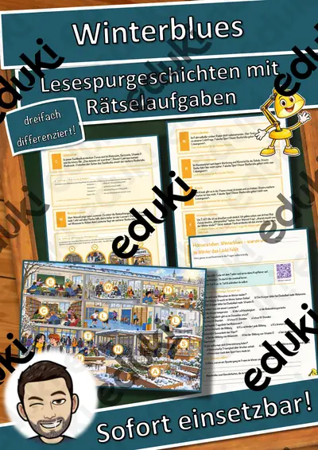
Winterblues – warum uns im Winter das Licht fehlt – Lesespurgeschichte mit Rätselaufgaben (Klasse 8)
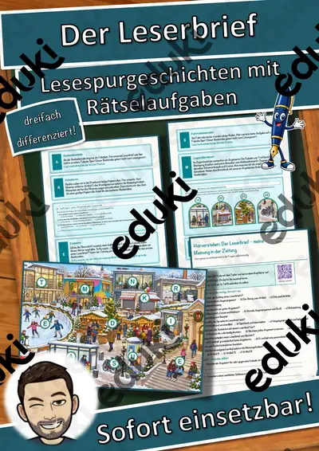
Der Leserbrief – meine Meinung in der Zeitung – Lesespurgeschichte mit Rätselaufgaben (Klasse 8)
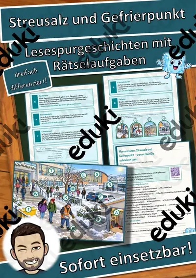
Streusalz und Gefrierpunkt – warum Salz Eis schmelzen lässt – Lesespurgeschichte mit Rätselaufgaben (Klasse 8)

Erste Hilfe bei Kälte – Unterkühlung und Erfrierungen – Lesespurgeschichte mit Rätselaufgaben (Klasse 8)
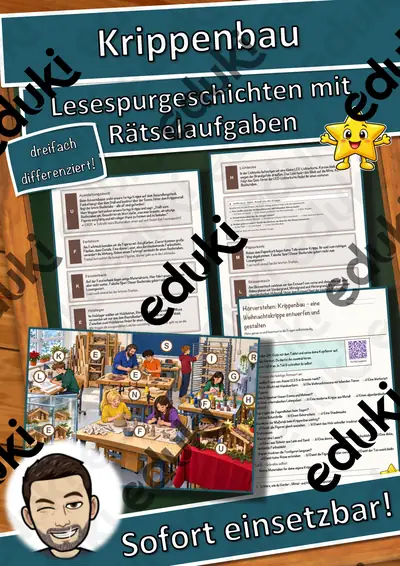
Krippenbau – eine Weihnachtskrippe entwerfen und gestalten – Lesespurgeschichte mit Rätselaufgaben (Klasse 8)

Ein Festtagsmenü planen – Einkauf, Mengen und Zeitplan – Lesespurgeschichte mit Rätselaufgaben (Klasse 8)

Woher kommt mein Spielzeug – die Weltreise eines Spielzeugautos – Lesespurgeschichte mit Rätselaufgaben (Klasse 8)
Keine Materialien gefunden – versuch einen anderen Suchbegriff oder Filter.
Das Jahr der Fachtiefe
In Klasse 8 wird in vielen Fächern präziser gearbeitet. Prüfungstrainings fassen Stoff zusammen, Lesespuren bieten Anwendungsbezug. Die Materialien dieser Seite sind für beides zu haben.
Naturwissenschaften
Die Physik liefert „Die Lichterkette“, „Polarlichter“, „Das Zeitlabor“ und „Der Satellit“. Chemie ergänzt „Ostereier natürlich färben“, „Handwärmer“, „Streusalz und Gefrierpunkt“ und „Flammenfärbung“. Biologie bietet „Winterblues“, „Erste Hilfe bei Kälte“, „Die Kieme“ und „Der Muskel“.
Gesellschaft und Raum
Geschichte: „Die Märzrevolution 1848“, „Die Weimarer Republik“, „Das Automobil“ und „Die Eisenbahn verändert das Land“. Erdkunde: „Woher kommt mein Spielzeug“, „Das Tiefdruckgebiet“, „Der Canyon“ und das „Materialpaket Winter und Advent für die 8. Klasse“. Politik und Wirtschaft ergänzen das Bild mit Jugendschutz, Kinderrechten und Konsum.
Deutsch, Kunst, Sport
Deutsch behandelt „Umtausch nach Weihnachten“, „Der Kaminofen“ und „Paketflut im Advent“. Kunst: „Krippenbau“, „Vincent van Gogh“, „Farbwirkung und Farbpsychologie“. Sport: „Der Sportverein“ und „Skilanglauf und Biathlon“.
Training und Anwendung verbinden
In der 8. Klasse wechseln sich Üben und Anwenden ab. Die Prüfungstrainings sichern Wissen mit Aufgaben und Mindmaps, die Lesespuren führen es in Geschichten und Alltagssituationen zusammen. Wer beides kombiniert, deckt eine Einheit von der Einführung bis zur Festigung ab. Die Lösungen sind enthalten, sodass die Klasse eigenständig kontrolliert. Über die Fach-Klasse-Seiten findest du direkt alles zu einem einzelnen Fach in diesem Jahrgang.
Ein Wort zur Auswahl
Die Liste ist lang, und nicht jedes Blatt passt zu jedem Lehrplan der Länder. Lies deshalb die Beschreibung, bevor du ein Material einplanst, und prüfe Thema und Anspruch gegen deinen schulinternen Plan.
Für Vertretung und Wochenplan
Die Lesespuren und Lückentexte erklären sich selbst, deshalb eignen sie sich für Vertretungsstunden, Wochenplanarbeit und Stationen, in denen Jugendliche ohne ständige Anleitung vorankommen.
Häufige Fragen
Gibt es Prüfungstrainings für Klasse 8?
Ja, in mehreren Fächern. Sie fassen Wissen in Mindmaps und Aufgaben zusammen.
Sind Versuche mit Materialien aus dem Haushalt möglich?
Einige Chemie-Titel arbeiten mit Alltagsstoffen. Sicherheitshinweise beachtest du wie immer im Fachraum.
Gibt es Material für VERA 8?
Ja, für Englisch gibt es einen Probetest zum Leseverstehen.
Welche Fächer sind besonders stark vertreten?
Biologie, Deutsch, Physik, Kunst und Erdkunde.